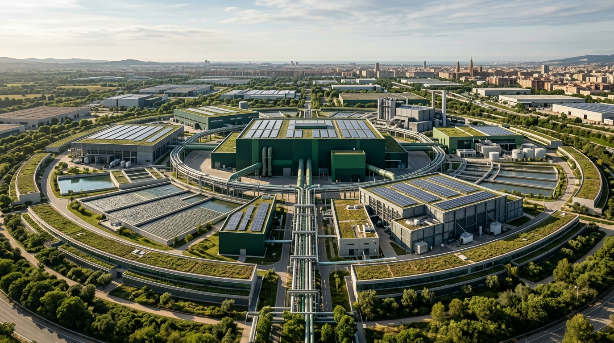
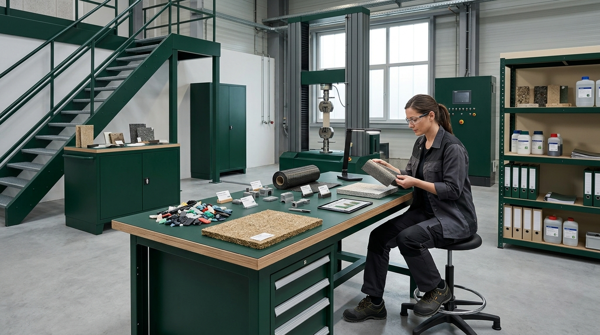
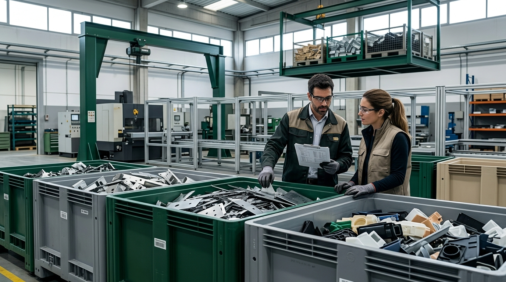

01. Aprovechamiento de materiales
Analizamos materiales, residuos y recursos utilizados para detectar oportunidades de reducción, reutilización y valorización.
Ayudamos a empresas industriales a identificar oportunidades para reducir residuos, aprovechar materiales y mejorar el uso de sus recursos, convirtiendo la economía circular en decisiones prácticas para el negocio.
Identificar oportunidadesAnalizamos materiales, residuos y recursos utilizados para detectar oportunidades de reducción, reutilización y valorización.
Identificamos alternativas de materiales, posibilidades de ecodiseño y mejoras que pueden integrarse en los procesos existentes.
Exploramos oportunidades para aprovechar subproductos, compartir recursos o encontrar usos alternativos mediante colaboraciones con otras empresas.

Entendemos los materiales, procesos, residuos y necesidades de tu empresa.
Priorizamos oportunidades de reducción, reutilización, valorización e innovación.
Analizamos viabilidad operativa, económica y ambiental para comparar alternativas.
Definimos acciones prioritarias, responsables y próximos pasos para avanzar.
Exploramos cómo conectar materiales, procesos y necesidades entre empresas para reducir pérdidas de recursos, identificar usos alternativos y abrir nuevas posibilidades de colaboración industrial.


No se trata de aplicar soluciones circulares por tendencia, sino de identificar qué oportunidades tienen sentido para tu actividad y cómo empezar a desarrollarlas.
Hablemos de tus procesos, tus materiales y las oportunidades que merece la pena explorar.
Hablar con LABAD